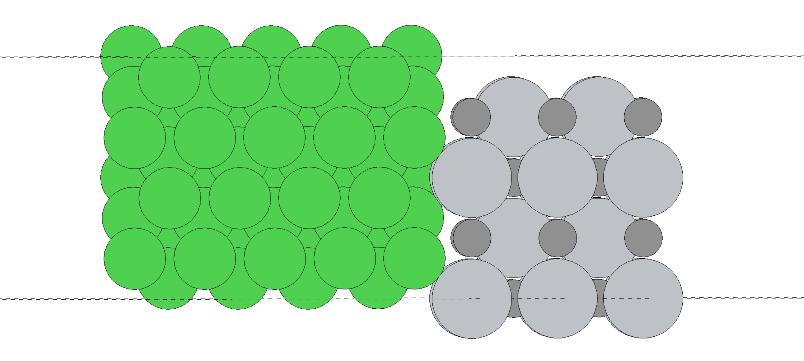
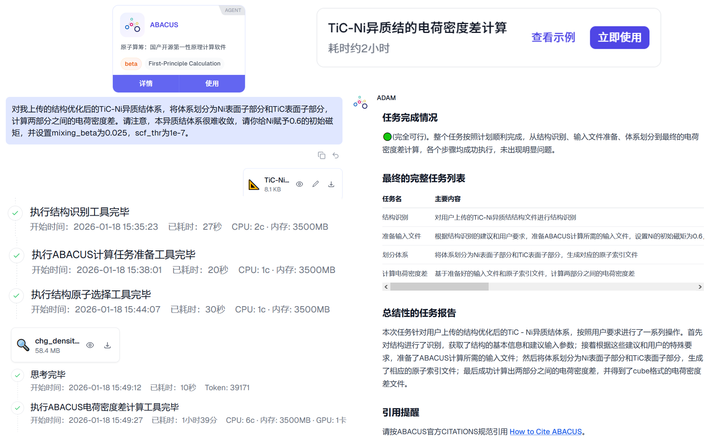
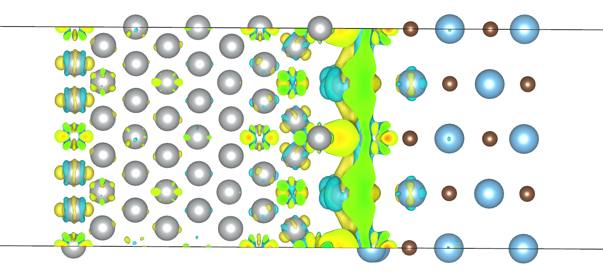
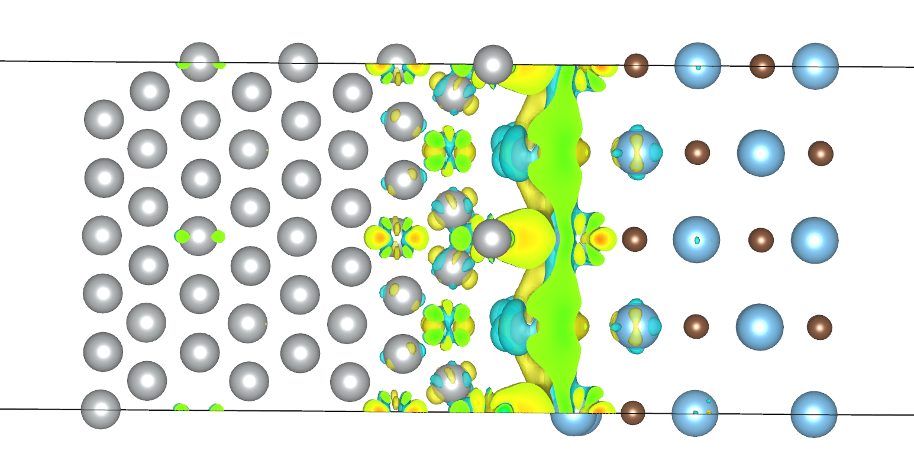

ABACUS 计算案例 : TiC-Ni 半导体-金属异质结体系的 SCF 和电荷密度差
作者：刘照清，邮箱：quanmisaka@stu.pku.edu.cn
审核：陈默涵，邮箱：mohanchen@pku.edu.cn
最后更新时间：2026/02/07
一、背景
异质结体系是指由两种或两种以上化学组分、晶体结构或电子性质不同的材料通过界面接触形成的复合体系，其核心特征是存在明确的异质界面，区别于由同种材料构成的同质结（如单晶硅 pn 结）。异质结是光电器件、催化材料、储能材料等领域的核心结构（如石墨烯 / 氮化硼范德华异质结、钙钛矿 / 硅太阳能电池异质结）。其结构决定了其计算的复杂性。针对这类体系，可通过电荷密度差（charge density difference, CDD, 又称差分电荷密度）计算，直观地展现界面处的电荷重新分布。
下图图示了某位 ABACUS 用户在科研实际中处理的 TiC-Ni 异质结体系，体系化学式为 Ti20C20Ni54。这类体系由于其低维性质、异质性质、且包含磁性金属 Ni，因而，针对这类体系，收敛且准确的 SCF 计算本身就是一个挑战。

本案例将会完成这一体系的电荷密度差计算，并在完成计算过程中探究其 SCF 收敛性。SCF 收敛之后，结构优化是自然可以完成的，案例篇幅所限，这里直接以结构优化收敛结构为输入结构。相关计算基于 ABACUS LTS v3.10.1 完成，并采用了 GPU 异构化并行加速计算。所采用的赝势和基组来自 ABACUS 赝势轨道库 (APNS)，并采用 efficiency 基组。
二、SCF 收敛性测试
案例可以通过此地址下载输入和输出文件：https://github.com/MCresearch/abacus-user-guide/tree/master/examples/TiC-Ni
对于 TiC-Ni 这类含过渡金属、甚至是磁性元素 Ni 的异质结表面体系，一般而言，可将 INPUT 设置如下
INPUT_PARAMETERS RUNNING ABACUS-DFT
#Parameters (1.General)
suffix ABACUS
nspin 2
symmetry 0
esolver_type ksdft
dft_functional pbe
ks_solver cusolver
device gpu
vdw_method none
#Parameters (2.Iteration)
calculation scf
ecutwfc 100
scf_thr 1e-7
scf_nmax 400
#Parameters (3.Basis)
basis_type lcao
kspacing 0.14 1 0.14
#Parameters (4.Smearing)
smearing_method gaussian
smearing_sigma 0.004
#Parameters (5.Mixing)
mixing_type broyden
mixing_ndim 20
mixing_beta 0.1
mixing_gg0 1.0
#Parameters (6.Calculation)
cal_force 1
cal_stress 1
out_stru 1
out_chg 0
out_mul 1
onsite_radius 3.0
efield_flag 1
dip_cor_flag 1
efield_dir 1
对关键参数进行一些说明：
- 体系含磁性金属 Ni, 需要设置
nspin = 2打开自旋极化。并设置 Ni 的初猜原子磁矩，可以设置为 1。在后续计算中，我们会发现实际的 Ni 原子磁矩大约在 0.6。同时，Ti 和 C 的原子磁矩为 0。 - 为加速 ABACUS SCF 计算，我们对结构的晶格轴进行了调整，将表面的面内长边放在了 C 轴方向，相应地将真空层放在了 B 轴方向。因此
kspacing相应调整为 0.14 1 0.14，确保真空层 B 轴方向 K 点仅包含单 Gamma 点。并通过efield_dir 1等参数设置 B 轴方向的偶极校正。确保真空层方向没有非物理的相互作用。 - 采用单张 GPU 加速的 LCAO 计算时，设置
device gpu开启 GPU 加速，选用ks_solver cusolver求解 Kohn-Sham 方程，并通过直接运行abacus开启计算，不使用mpirun，但可以通过export OMP_NUM_THREADS=[num_threads]环境变量设置 OpenMP 线程数。 symmetry 0关闭基于结构的对称性，仅开启 K 点对称性简化。由于这类异质体系一般也没有对称性，使用symmetry 1不会有任何加速，SCF 迭代过程和结果与symmetry 0相同。
同时，由于体系的 SCF 收敛困难，需要对 SCF 收敛性参数进行调整。可以调整的参数有：
scf_nmax：SCF 迭代最大次数，默认值为 100。由于该体系收敛困难，将其设置为 400。scf_thr：SCF 迭代收敛阈值，默认值为 1e-7。由于该体系收敛困难，可选择将其设置为 1e-6。但是，在后续的电荷密度差计算中，我们会发现设置为 1e-6 是不可行的，会导致电荷密度差结果非物理。mixing_method：SCF 迭代过程中的密度混合方法。一般推荐选用broydenmixing_beta：密度混合参数，范围在 0 到 1 之间，该参数越大则电荷密度迭代越激进，在一般计算中收敛越快，但收敛性越不稳定，对于不易收敛体系 SCF 越容易跑飞。通过调小该值，可以收敛速度为代价，提升收敛的稳定性。对于自旋极化nspin 2体系，其默认值为 0.4。而对于这类低维难收敛体系，可以直接设置在 0.1 以提升收敛稳定性。mixing_ndim：密度混合维度，即密度混合计算时会保存的历史电荷密度数目，默认值为 8。一般这个值越大收敛性越好，但其内存消耗会线性增加，8 一般够用。对于此类低维磁性难收敛体系，可以将该值设置到 20 以提升收敛稳定性。
然而，虽然如此设置。该体系的 SCF 依然无法收敛。在经过了一系列的测试后，我们发现 需要将 mixing_beta 设置为 0.025 才能有比较好的 SCF 收敛性。
以下是在不同 mixing_beta 值和不同磁矩初猜下（其他参数遵循上述 INPUT 文件）上述 TiC-Ni 异质结的 SCF 收敛情况，电子步数，体系能量和总磁矩。
| mixing_beta | Ni磁矩初猜 | 收敛情况 | scf 步数 | 能量 | 总磁矩 |
|---|---|---|---|---|---|
| 0.020 | 1.0 | True | 78 | -261187.939966 | 32.7897 |
| 0.025 | 1.0 | True | 74 | -261187.939965 | 32.7897 |
| 0.050 | 1.0 | False | 400 | -261186.291935 | 11.6974 |
| 0.100 | 1.0 | False | 400 | -261187.940138 | 32.8633 |
| 0.020 | 0.6 | True | 74 | -261187.939965 | 32.78970 |
| 0.025 | 0.6 | True | 79 | -261187.939965 | 32.78970 |
| 0.050 | 0.6 | False | 400 | -261186.996675 | 13.82590 |
| 0.100 | 0.6 | False | 400 | -261580.284719 | -0.29178 |
| 0.020 | 1.5 | True | 78 | -261187.939964 | 32.7897 |
| 0.025 | 1.5 | True | 71 | -261187.939966 | 32.7897 |
| 0.050 | 1.5 | True | 117 | -261187.939965 | 32.7897 |
| 0.100 | 1.5 | False | 35 | -261186.432871 | 16.4053 |
从上述测试结果中可以发现，当 mixing_beta 为 0.025 时，体系的 SCF 收敛速度整体来说最快，收敛稳定性也最好。同时，当体系收敛时，其能量和总磁矩也是一致的，说明不同磁矩初猜下体系可以稳健一致地收敛到相同电子结构。
同时，选用 0.025 的 mixing_beta 也能更好培养用户的调参习惯。在官方文档中 mixing_beta 栏目会提到其默认值为 0.4，且对于这类低维难收敛体系可以设置在 0.1 以提升收敛稳定性。将 0.1 进一步降低至 1/4 即为 0.025，这一值在上述测试中也表现稳定。因而这一案例和 mixing_beta 值选择不仅能拓展收敛性调参的范围，还能使收敛性调参更加具有规律。
三、电荷密度差计算
体系的电荷密度差需要将体系划分为两个子体系，分别对主体系和两个子体系进行相同参数下的 SCF 计算，保存 Cube 电荷密度文件，再在此基础上进行作差得到。对于这一 TiC-Ni 异质结体系而言，主体系将被划分为 TiC 子体系和 Ni 子体系。这一电荷密度差计算工作流目前被打包在 ABACUS 开源智能体工具 ABACUS-Agent-Tools 中，并可通过 GaliLeo 科学智算平台 上的 ABACUS 智能体快速开展。本 TiC-Ni 的电荷密度差计算案例也可在平台上查看，或者点击这个案例分享链接快速查看。
下图图示了基于 GaliLeo 科学智算平台，通过自然语言驱动，AI 智能体自主开展的 TiC-Ni 异质结体系的电荷密度差计算过程。

在上面的 SCF 收敛性测试中，我们已经确定了 mixing_beta 为 0.025 时体系的 SCF 收敛速度最稳健，且 Ni 部分的实际原子磁矩大概在 0.6 左右。为减少计算量，我们或许会想将 scf_thr 放宽到 1e-6。但在实际计算中，我们发现，在 scf_thr 为 1e-6 时，对本异质结体系计算所得的电荷密度差在 Ni 部分的外表面（而不只是交界表面）有分布，这样的电荷密度差分布是非物理的，如下图所示。

只有设置 scf_thr 1e-7 后，计算所得的电荷密度差才没有在 Ni 部分外表面的分布，更符合物理实际，如下图所示。

这个案例也很深刻地展示了在进行电子结构计算时，SCF 收敛阈值 scf_thr 对计算结果的影响。在网络上的很多计算案例中，多有认为电子步迭代的绝对能量收敛到 1e-6 eV 层次即可的例子，甚至有的将能量收敛限放宽到了 1e-5 乃至 1e-4。而在实际上，这类宽收敛阈值下的计算看起来绝对能量收敛了，但其电子结构（波函数和电荷分布）远没有收敛，甚至连原子受力，晶格应力都不一定收敛了。只有将 scf_thr 取适当严格值，才能得到符合物理意义的结果。
四、总结
以上就是本案例的内容，本案例拓展了 ABACUS 的应用边界，获取了两条关键信息
- 对于含 Ni 的表面/异质结体系，在 ABACUS 的 LCAO 基组下开展 SCF 计算时，可能需要将
mixing_beta进一步调低至 0.025 才能得到更稳健的 SCF 收敛性。 - 对于电荷密度差性质计算，需要将 SCF 收敛阈值
scf_thr取默认值1e-7才能得到物理正确的结果，对收敛阈值的放宽会导致非物理的结果。并且，SCF 迭代收敛不充分时，可能绝对能量看起来收敛了，但电子结构远未收敛。
希望本案例的实践和信息对各位 ABACUS 用户有实际帮助！
值得强调的是，上述电荷密度差计算和结果提取全部由 GaliLeo 科学智算平台 上的 ABACUS ADAM 智能体完成，这一智能体以 ABACUS-agent-tools 中的智能体工具为基础构建。GaliLeo 科学智算平台聚焦“自然语言 + 科研计算”，用户可在平台网页通过自然语言向智能体 ADAM 提出需求，如“计算蛋白–小分子结合自由能”、“计算分子在表面的吸附能”等，ADAM 将自动完成解析 → 查询知识库 → 调用 HPC/云原生科学计算引擎 → 返回科学解读与可视化报告的全过程，实现从需求到结果的全流程自动化。GaliLeo 已在理论计算化学、计算生物学、计算材料学、AI for Science 与实验-计算交互等领域成功落地，其社区已有 1200+ 用户（截至发稿），涵盖 70 余家高校与科研机构的硕博科研人员。欢迎访问 sidereus‑ai.com，关注微信公众号 “星使智算 Sidereus” 或发送邮件至 sidereus_ai@163.com，共创科研智能体未来！